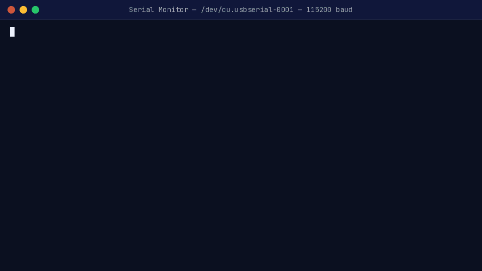
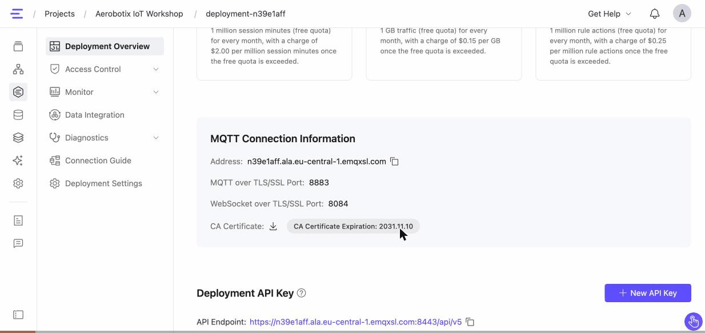

How the Internet of Things really works
By the end of today you'll understand every arrow on this screen.
 Place a recording here:
Place a recording here: assets/demo-hook.gifsensors & devices
networks & protocols
MQTT, brokers, JSON
Node-RED, dashboards, DB
What turns a simple object into a "thing" on the Internet?
sensors & actuators
network & protocols
data & logic
decisions & control
at scale, with minimal humans
Analogy: give an object senses, a voice, a brain and hands.
Coca-Cola machine online at Carnegie Mellon 🥤
"Is there a cold drink?"
Kevin Ashton coins "Internet of Things"
same year MQTT is born
IPv6 + cheap Wi-Fi chips
an address for every object
ESP8266 / ESP32 arrive
Wi-Fi for ~$3: IoT for everyone
AIoT & Matter
AI on the device, one smart-home standard
more things than people online
projected to nearly double
millions of new readings
Source: IoT Analytics, State of IoT 2025.
lights, locks, energy
soil moisture → irrigation
wearables, remote care
predictive maintenance
parking, lighting, air
fleet & cold-chain tracking
smart grids, meters
telemetry, fleets 🤖
sensors, actuators, microcontrollers
sensors, actuators, microcontrollers
Wi-Fi, BLE, LoRaWAN, cellular → Internet
sensors, actuators, microcontrollers
Wi-Fi, BLE, LoRaWAN, cellular → Internet
broker, rules, storage, device management
sensors, actuators, microcontrollers
Wi-Fi, BLE, LoRaWAN, cellular → Internet
broker, rules, storage, device management
dashboards, mobile apps, alerts, AI
filter noise, react instantly (e.g. stop a motor)
aggregate, translate protocols (BLE → MQTT)
storage, analytics, AI, access from anywhere
batteries must last years
KBs of RAM, slow CPU
slow, unreliable, drops
thousands of devices
exposed, rarely updated
IoT = objects that sense, connect, process and act, organized in 4 layers from the sensor to the app.
How does a $4 chip feel the world and change it?
| MCU (ESP32, STM32) | SBC (Raspberry Pi) | |
|---|---|---|
| OS | none / RTOS | Linux |
| RAM | KB → few MB | GB |
| Power | mW · deep sleep µA | Watts |
| Boot | instant | seconds |
| Typical role | sensor node | gateway, edge computer |
a voltage that varies continuously → read with the ADC
potentiometer · LDR (light) · soil moisture · gas (MQ-x)
the sensor sends bits through a bus
I²C BME280, MPU6050 · SPI · 1-Wire DHT22, DS18B20 · UART GPS
temp + humidity
motion, tilt
distance
presence
Today's question: how does 24.3 °C leave the chip and reach the world?
Also: servo · buzzer · solenoid valve · display
Let's get it to the world

Place a recording here:assets/demo-serial.gifThe device senses (sensor → ADC → number), acts (GPIO → actuator), and runs a never-blocking loop that sends, receives and reconnects.
Our number is ready. How does it cross the air?
| Technology | Range | Data rate | Power | Typical use |
|---|---|---|---|---|
| Wi-Fi 2.4 GHz | ~50 m | high (Mbps) | high | home devices, cameras |
| BLE | ~10–50 m | low–medium | very low | wearables, beacons |
| Zigbee / Thread | 10–100 m (mesh) | low | very low | smart home · Matter |
| LoRaWAN | 2–15 km | bytes | very low | farms, smart cities |
| NB-IoT / LTE-M | cellular | low–medium | low | meters, trackers |
| 4G / 5G | cellular | very high | high | vehicles, drones, video |
| Wired | — | high | — | industry (Ethernet, RS-485) |
10-hectare farm, battery, 1 reading / 15 min
always on your wrist, talks to your phone
HD video, plugged into the wall
From here on, we focus on what happens above the network.
Every radio trades range, data rate and power, but they all end up on the Internet (TCP/IP).
We're online. Now, what language do the device and the app speak?
✅ universal · simple · passes firewalls
❌ heavy headers · no push · polling wastes battery
Persistent · full-duplex · the server can push. Details in section 7.
Used in very constrained networks: Thread, 6LoWPAN, LwM2M.
enterprise messaging (banks, backends)
device management: config, firmware
smart-home interoperability
industrial machines
| HTTP | WebSocket | MQTT | CoAP | |
|---|---|---|---|---|
| Pattern | request / response | two-way stream | publish / subscribe | req/resp + observe |
| Transport | TCP | TCP | TCP (or WebSocket) | UDP |
| Connection | short | persistent | persistent | connectionless |
| Push to device | ❌ polling | ✅ | ✅ | ✅ observe |
| One → many | ❌ | ❌ app logic | ✅ native | multicast |
| Min overhead | 100s of bytes | 2–14 B / frame | 2 bytes | 4 bytes |
| Delivery guarantee | ❌ | ❌ | QoS 0 / 1 / 2 | confirmable |
| Browser | ✅ | ✅ | via WebSocket | ❌ |
| Best for | APIs, config, OTA | live web apps | IoT telemetry & commands | tiny devices |
device ↔ cloud
cloud ↔ browser (live)
APIs, config, firmware downloads
The device keeps a connection open to the broker, so the broker can push.
HTTP, WebSocket and MQTT use TCP. CoAP uses UDP to stay tiny.
Browsers can't open raw TCP sockets, so MQTT travels inside WebSocket frames.
MQTT talks to devices, WebSocket talks to browsers, HTTP handles APIs. MQTT wins IoT because the broker can push.
How can a 2-byte header run the world's IoT?
Andy Stanford-Clark (IBM) & Arlen Nipper
monitor oil pipelines over satellite
MQTT 3.1.1 becomes an OASIS standard
open, free, everywhere
MQTT 5.0
reason codes, expiry, shared subs…
No need to create topics: they exist as soon as someone publishes. UTF-8, case-sensitive.
| Topic | Direction | Payload |
|---|---|---|
aerobotix/<device>/telemetry | device → cloud | JSON sensor data |
aerobotix/<device>/status | device → cloud | online / offline (retained + LWT) |
aerobotix/<device>/led/state | device → cloud | ON / OFF (retained) |
aerobotix/<device>/led/set | cloud → device | ON / OFF / TOGGLE |
lowercase, no spaces
device ID in the path
set / state pattern
general → specific
/aerobotix/... (leading /)
My Device/Temp
temp (too flat)
secrets in topics
JSON
{"temp":24.3,"hum":55.1}plain text
ONraw bytes
FF D8 FF E0 …✅ fastest, lightest · ❌ may lose messages · 👍 frequent sensor data
| Use case | QoS | Why |
|---|---|---|
| Frequent telemetry | 0 | the next reading arrives soon |
| Commands (LED, valve) | 1 | must arrive; a duplicate is harmless |
| Billing, counters, alarms | 2 | a duplicate would be wrong |
keepAlive = 30 s → the client must send something (or a PINGREQ) at least every 30 s
clean session = false → the broker remembers subscriptions & queues QoS 1/2 messages
know why something failed
drop stale messages
load-balance across workers
replace long topics by a number
custom key/value headers
reply topic + correlation data
aerobotix/esp32/led/set?aerobotix/+/setaerobotix/esp32/+aerobotix/#+ matches exactly one level, but led/set is two levels. # matches everything below.
The broker keeps the last retained message per topic and hands it to every new subscriber.
A dead device can't speak. The will was registered at CONNECT, and the broker sends it after 1.5 × keepAlive.
MQTT = clients publish to topics, a broker routes them, with QoS for reliability, retained for state, and a Last Will for failures.
Who runs the post office, and where does it live?
thousands of open connections
who are you? (user / password, certificates)
ACL: what may you publish / subscribe?
matches topics → delivers copies
retained messages & sessions
fires Last Wills, exposes metrics
| Self-hosted Mosquitto, EMQX OSS | Managed EMQX Cloud, HiveMQ Cloud, AWS | |
|---|---|---|
| Setup | you install & maintain | sign up, ready in a minute |
| Cost | your server | free tier → pay as you grow |
| Control | full | provider's options |
| Scaling / HA | your job | handled for you |
| Offline / LAN only | ✅ | ❌ |
| Typical use | home lab, factory LAN, learning | products, prototypes reachable anywhere |
mosquitto_pub / mosquitto_sub
# macOS
brew install mosquitto
# Debian / Ubuntu / Raspberry Pi
sudo apt install mosquitto mosquitto-clients
# Docker
docker run -p 1883:1883 eclipse-mosquitto
-t topic · -m message · -v print the topic too · -h broker host
listener 1883
allow_anonymous false
password_file /etc/mosquitto/passwd
listener 9001
protocol websockets
listens on localhost only and refuses anonymous clients
mosquitto_passwd for users · ACL file for permissions · TLS via cafile / certfile / keyfile
SELECT payload.temp AS t, clientid
FROM "aerobotix/+/telemetry"
WHERE payload.temp > 30
→ send to a database, Kafka, a webhook…
8883 / 8084, CA certificate
Place a recording here:assets/demo-emqx.gifenterprise · famous "MQTT Essentials" guide
open-source, clustered
ultra-light, for the edge
message queue with an MQTT plugin
MQTT + device registry + shadows
MQTT + device management
test.mosquitto.org, broker.emqx.io, broker.hivemq.com): everyone can read everything. Never real data.| Mosquitto | EMQX | HiveMQ | AWS IoT Core | |
|---|---|---|---|---|
| Language | C | Erlang | Java | managed |
| Scale | thousands | millions | millions | millions |
| Clustering | ❌ | ✅ | ✅ | ✅ |
| Rules engine | ❌ | ✅ | extensions | ✅ |
| Web UI | ❌ | ✅ | ✅ | ✅ |
| Best for | learning, small / LAN | scale, IoT platforms | enterprise | AWS ecosystem |
A broker authenticates, authorizes and routes: Mosquitto to learn and run locally, EMQX & cloud brokers to scale and be reachable anywhere.
How does a browser speak MQTT?
ask every second
server holds the answer
push, but one-way only
GET /mqtt HTTP/1.1
Host: broker.example.com
Upgrade: websocket
Connection: Upgrade
Sec-WebSocket-Key: dGhlIHNhbXBsZSBub25jZQ==
Sec-WebSocket-Protocol: mqtt
Sec-WebSocket-Version: 13
HTTP/1.1 101 Switching Protocols
Upgrade: websocket
Connection: Upgrade
Sec-WebSocket-Accept: s3pPLMBiTxaQ9kYGzzhZRbK+xOo=
Sec-WebSocket-Protocol: mqtt
After 101, it's no longer HTTP: both sides send frames anytime.
header: 2 to 14 bytes · client → server frames are masked
opcode 0x1
opcode 0x2 ← MQTT
0x9 / 0xA keep alive
0x8 goodbye
wss://<host>:8084/mqtt
ws://localhost:9001
101 Switching Protocols Place a recording here:
Place a recording here: assets/demo-devtools.gif101 ends HTTP on that connection; frames start flowing both ways.
mqtt://host:1883mqtts://host:8883wss://host:8084/mqttBrowser → WebSocket; Serverless → TLS only. So wss on 8084.
WebSocket starts as HTTP, upgrades with 101, and becomes a two-way pipe: that's how browsers carry MQTT.
C++, Erlang, JavaScript, SQL… how do they all understand 24.3?
❌ What? Which unit? Which sensor? When?
⚠️ Better, but cryptic: "t" = temp? time?
✅ self-describing · unit · timestamp · schema version
temp not t, or a documented schema
temp_c or a unit field
epoch 1731340800 or ISO 2026-11-11T10:00:00Z
"v":1 so apps can evolve
the topic is the address; don't repeat it
every byte costs battery
{"temp":24.3,"hum":55.1}JSON: several values
ONplain text: one word
onlineplain text: one state
The broker never decodes the payload. JSON is a deal between producer & consumers.
Indicative sizes for our reading.
RFC 8428: standard JSON/CBOR format for sensor measurements
Protobuf over MQTT for industrial IoT
describe & validate your payloads
{"temp": NaN}. What happens?NaN isn't valid JSON, and the broker doesn't check payloads. Validate on the device!
aerobotix/esp32-01/telemetryThe topic is the address: subscribers and ACLs can filter on it with wildcards.
The broker moves bytes; JSON is the shared language: self-describing, with units, a timestamp and a version.
…/telemetryEach line = one phone publishing to aerobotix/<name>/telemetry
How do we add logic without writing a whole backend?
native MQTT nodes · fast prototyping · visual data flows · 5000+ community nodes · built-in dashboard
LEGO for data: snap blocks together, data flows through the wires
{
topic: "aerobotix/esp32/telemetry",
payload: { temp: 24.3, hum: 55.1 },
_msgid: "c3f1…"
}
inject, mqtt in, http in
function, switch, change, json, rbe
debug, mqtt out, dashboard, databases
// msg.topic = "aerobotix/amine/telemetry"
// msg.payload = { temp: 24.3, hum: 55.1 }
const device = msg.topic.split("/")[1];
msg.payload = { device, temp: msg.payload.temp };
return msg;
mqtt in (aerobotix/+/telemetry) → debug → Deploy: messages appearjson → ui-gauge + ui-charthttp://localhost:1880/dashboardui-switch → mqtt out (…/led/set): control the real LED 💡
npm install -g --unsafe-perm node-red
node-red
# → open http://localhost:1880
☰ → Manage palette → install @flowfuse/node-red-dashboard (Dashboard 2.0)
the old node-red-dashboard is deprecated
prototypes
gateways & fog logic
small / medium deployments
gluing APIs together
big flows get messy
harder version control than code
not built for massive scale
msg.datamsg.payloadmsg.bodyBy convention, nodes read and write msg.payload; the MQTT topic is in msg.topic.
"{\"temp\":24.3}". Which node makes it an object?The json node converts string ↔ object (or set the mqtt in output to "parsed JSON").
Node-RED = nodes + wires + msg: subscribe, transform, decide, store and control, visually.
How does a reading become a moving line on a screen?
what's the state now?
what are the trends?
send commands
| ⚡ Real-time view | 📈 Historical view | |
|---|---|---|
| Question | "what's happening now?" | "what happened last week?" |
| Source | live MQTT stream (WebSocket) | database queries |
| Latency | milliseconds | seconds |
| Survives refresh? | ❌ (unless retained) | ✅ |
| Example | live gauge, LED switch | 7-day temperature trend |
time device temp hum
2026-11-11 10:00:00 esp32 24.3 55.1
2026-11-11 10:00:05 esp32 24.4 55.0
2026-11-11 10:00:10 esp32 24.4 54.8
timestamp + tags + values · written constantly · read by time range
millions of points, little disk
raw 7 days → hourly averages 1 year
InfluxDB · TimescaleDB · Prometheus
esp32 · online
phone-sara · offline
most important value, biggest
gauge = now · line = trend · bar = compare · map = where
"24.3 °C · 2 s ago": stale data lies
is the device even online?
green / orange / red thresholds, no rainbow
show the device state, not the button
| Tool | Type | Strength | Effort |
|---|---|---|---|
| Node-RED Dashboard 2.0 | low-code | monitor + control, fast | ⭐ |
| Grafana (+ InfluxDB) | observability | beautiful history, alerts | ⭐⭐ |
| ThingsBoard | IoT platform | devices, rules, multi-tenant | ⭐⭐ |
| Home Assistant | smart home | huge ecosystem, automations | ⭐ |
| Blynk · Arduino Cloud | SaaS | zero hosting | ⭐ |
| Custom web app | code | full control & branding | ⭐⭐⭐ |
our dashboard (WebSocket)
from the walkthrough
history (screenshot)
 Place a recording here:
Place a recording here: assets/demo-dashboards.gifDashboards = live stream for now + time-series DB for history, and they show the confirmed device state.
From "works on my laptop" to a real app anyone can open.
only the last retained message survives
→ a database (Supabase)
file:///…/index.html on my laptop
→ hosting with a URL (Vercel)
a real SQL database
every table reachable over HTTP
changes pushed over WebSocket
users & logins
files, serverless code
perfect for student projects
create table telemetry (
id bigint generated always as identity primary key,
device text not null,
temp real,
hum real,
created_at timestamptz not null default now()
);
rows = readings · columns = our JSON keys → good payload design pays off here
| id | device | temp | hum | created_at |
|---|
const { data } = await supabase.from('telemetry')
.select('*').eq('device', 'esp32')
.order('created_at', { ascending: false }).limit(100);
supabase.channel('live')
.on('postgres_changes', { event: 'INSERT', schema: 'public', table: 'telemetry' },
(row) => addPoint(row.new))
.subscribe();
History first, then live updates: the same "now + history" idea from section 11.
every git push deploys automatically
required for wss:// & phone sensors
one URL per branch
keys stay out of Git
static HTML, Next.js, React, Vue
small APIs when needed
main branch
install & bundle
to the edge network
HTTPS URL
OK in the browser only if Row Level Security (RLS) is enabled on your tables
bypasses RLS: never in front-end code, never on a device
 Place a recording here:
Place a recording here: assets/demo-supabase.gifSupabase remembers (Postgres + Realtime), Vercel publishes (Git push → HTTPS URL), and RLS keeps it safe.
One reading, one command: every step, end to end.
At the broker, the dolls are opened in reverse order: Wi-Fi → IP → TCP → TLS → MQTT.
| Failure | What happens | Who handles it |
|---|---|---|
| Wi-Fi drops | reconnect loop | firmware |
| Broker connection lost | retry with backoff | firmware |
| Device dies | no ping → LWT "offline" | broker |
| Dashboard refreshes | retained restores state | broker |
| Wrong credentials | CONNACK refused (rc = 4 / 5) | broker → firmware logs |
| Message to offline device | lost (QoS 0) or queued (persistent, QoS 1) | broker |
Data goes up (sensor → JSON → MQTT → broker → screen & DB), commands come down, and the broker handles failures.
What happens when a toaster joins a botnet?
admin / admin on cameras & routers
of devices hijacked
massive DDoS attacks
| Layer | Question | How |
|---|---|---|
| Transport | can anyone read it? | TLS (8883 / wss 8084), CA certificates |
| Authentication | who are you? | user/password, client certificates (mTLS), JWT |
| Authorization | what can you do? | ACL per topic (publish / subscribe) |
| Device | is the hardware protected? | secure boot, flash encryption, no secrets in public repos |
| Lifecycle | still secure next year? | OTA updates, certificate rotation, monitoring |
# device: only its own topics
user esp32-01
topic write aerobotix/esp32-01/#
topic read aerobotix/esp32-01/+/set
# dashboard: read all, write commands
user dashboard
topic read aerobotix/#
topic write aerobotix/+/+/set
can only speak for itself
can't fake telemetry
Encrypt (TLS), authenticate every client, authorize per topic, and keep devices updated: never default passwords.
What will connected things look like in 5 years, and where do you fit?
ML models on the microcontroller (TF Lite Micro, Edge Impulse, ESP-DL): send "person detected", not video
NB-IoT / LTE-M for massive fleets · 5G RedCap · ultra-low latency for drones & robots
one smart-home standard backed by Apple, Google, Amazon, Samsung
a live virtual copy of a machine, building or city
predictive maintenance · OPC UA + MQTT (Sparkplug) · OT meets IT
direct-to-satellite for farms, ships, remote areas
battery-free sensors (solar, vibration, RF) · IoT for water & energy savings
EU Cyber Resilience Act: no default passwords, updates become mandatory
too many incompatible protocols
billions of never-updated devices
devices that last for years
analytics & AI on the flood
provision, monitor, update thousands
hardware + network + cloud + data
Roles: embedded dev · IoT architect · cloud/IoT platform engineer · IoT data engineer · IoT security · edge AI engineer
water management, irrigation, greenhouses
solar monitoring, smart meters
connected factories, predictive maintenance
hardware startups, competitions, Aerobotix projects 🤖
IoT is heading to AI at the edge, universal connectivity and mandatory security, and it needs people who understand the whole chain.
sensor → ADC → number
radio → Internet → TLS
MQTT · broker · JSON · WebSocket
Node-RED · dashboards · Supabase
workshop repo: code, slides, guide
Your feedback helps the next workshop.
2 minutes · scan the code
a/b/c+ one level · # all belowAerobotix · IoT Workshop